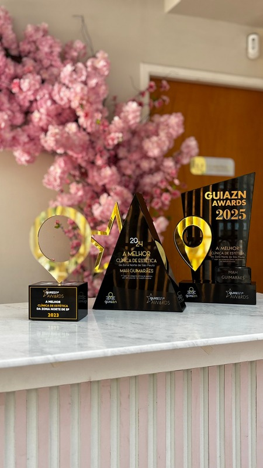
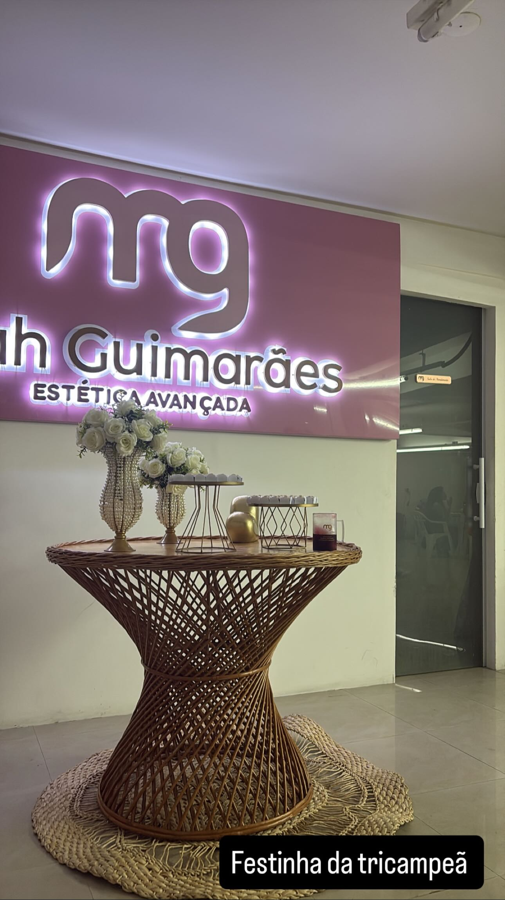

Enfermeira desde 2009. Três pós-graduações. Certificação internacional em harmonização corporal. E uma clínica eleita a melhor da Zona Norte três anos seguidos — construída paciente por paciente, sem atalho.
Harmonização facial e corporal envolve anatomia, vascularização, assepsia e conduta em caso de intercorrência. Quando dá certo, ninguém pergunta quem fez. Quando dá errado, a formação de quem aplicou é a única coisa que importa.
É por isso que a formação em enfermagem não é um detalhe do currículo aqui — é a base de tudo. Dezessete anos cuidando de gente antes de cuidar de estética muda o que você observa numa avaliação, muda o que você recusa fazer e muda como você reage se algo sair do previsto.
Uma coisa que a gente fala com franqueza: nem todo pedido vira procedimento. Se o que você quer não for adequado para o seu caso, para o seu momento ou para a sua estrutura, você vai ouvir isso — mesmo que signifique não fechar. É o tipo de conversa que ninguém gosta de ter e que evita arrependimento depois.
Estética é uma área que muda todo ano. Quem parou de estudar em 2015 está oferecendo 2015.
Dezessete anos de formação e prática em saúde antes de qualquer procedimento estético. É essa base que muda o que se observa numa avaliação e o que se recusa a fazer.
Enfermagem do trabalho, ginecologia e obstetrícia, e enfermagem estética. São formações que se somam — saúde da mulher e estética conversam muito mais do que parece.
Certificação internacional em harmonização corporal — a base técnica por trás da especialidade da casa e o que sustenta o resultado natural.
Formação em Adequação Nutricional e Manutenção da Homeostase, sob coordenação do Dr. Lair Ribeiro — 360 horas, reconhecida pelo MEC. Longevidade e prevenção entrando na conduta da clínica.
Método MAF, para inchaço e retenção de líquido, e Método R.A.R., para estrias e regeneração da pele — ambos desenvolvidos dentro da clínica.
Conhecer os métodos →Presença constante nos principais eventos do setor. O que chega de novo à clínica passa antes por avaliação técnica — novidade só entra quando tem evidência atrás.
Melhor Clínica de Estética da Zona Norte em 2023, 2024 e 2025. Três anos consecutivos.


"Quarenta anos de vida. Mais de uma década dedicada à estética. Três pós-graduações. Melhor Clínica de Estética da Zona Norte por três anos consecutivos. Mas o que mais me orgulha não são os títulos. É continuar aprendendo. Continuar evoluindo. Continuar trabalhando com propósito. Cada paciente atendido, cada resultado alcançado e cada sonho realizado reforçam a certeza de que estou no caminho certo."
— Dra. Maressa Guimarães
A avaliação é uma conversa. Você conta o que te incomoda, a gente te diz com honestidade o que é possível.